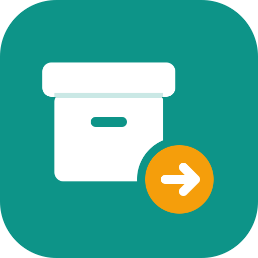

Sklad GoКонфиденциальность
Действует с 5 ноября 2026 годаSklad Go — учёт склада и долгов для маленького магазина. Программой пользуется хозяин магазина, сотрудники, которых он пустил, и покупатели, которые смотрят свой долг. Здесь написано, какие данные программа хранит, кто их видит и как их удалить.
Что хранится
- Вход через Google. Программа получает от Google только ваши имя, адрес почты и ссылку на фото профиля (фото не хранится). Пароль от Google ей не виден и не нужен.
- Вход по почте и паролю. Хранится адрес почты и только зашифрованный отпечаток пароля — сам пароль не хранится нигде. Если хозяин включил код из приложения, хранится ключ этого кода.
- Данные покупателя, которые он вписал сам при регистрации: имя, телефон, почта.
- Данные сотрудника, которые вы вписали сами при регистрации: имя, телефон, почта.
- Данные магазина: товары и остатки, история прихода и продаж, записи о долгах. В записях о долгах — имя и телефон человека, которые вписал сотрудник магазина.
- Лента изменений: кто из сотрудников что сделал и когда.
Программа не ведёт рекламу и слежку, не ставит счётчики посещений и не продаёт и не передаёт данные никому для своих целей.
Кто видит
Данные магазина видят только хозяин и сотрудники, которых он подтвердил. Новый человек после входа ждёт подтверждения и до этого не видит ничего. Покупатель после подтверждения хозяином видит только свои записи о долге — ни склада, ни чужих долгов. Это держат правила самой базы данных, а не только программа.
Где хранится
- Railway — сервер программы и база данных, США (их политика). Сервер хранит копии базы на случай сбоя: за последние 30 дней и по одной в неделю ещё полгода.
- Google — подтверждает, что вы — это вы, при входе (их политика).
- Vercel отдаёт страницы сайта и передаёт запросы серверу, jsDelivr — одну из библиотек программы. Они видят только сам запрос, как любой сайт.
На вашем телефоне программа хранит копию данных, чтобы работать без интернета. При выходе из программы эта копия стирается.
Как удалить
- Свой аккаунт сотрудник удаляет сам: вкладка «Команда» → «Удалить мой аккаунт». Вместе с ним удаляется вход и данные сотрудника. Покупатель может попросить хозяина магазина или написать разработчикам — аккаунт удалят вместе с входом.
- Записи магазина — товары, долги, история — принадлежат магазину. Если в них есть ваше имя или телефон и вы хотите их убрать, скажите хозяину магазина.
- Хозяин может удалить все данные магазина целиком.
Вопросы
Спросите хозяина магазина, который пригласил вас в программу, или напишите разработчикам: github.com/ganihaknazarov99-netizen/sklad-go.
Если эта страница изменится, новая версия появится здесь же, с новой датой.
Privacy
Effective 5 November 2026Sklad Go is a stock and debt book for a small shop. It is used by the shop owner, by the staff the owner lets in, and by customers who check their own debt. This page explains what the app stores, who can see it and how to delete it.
What is stored
- Google sign-in. The app receives only your name, email address and profile photo link from Google (the photo is not stored). It never sees your Google password.
- Email and password sign-in. The app stores your email address and only an encrypted fingerprint of your password — the password itself is not stored anywhere. If the owner turns on app codes, the key for those codes is stored.
- Customer details customers enter themselves when they register: name, phone, email.
- Staff details you enter yourself when you register: name, phone, email.
- Shop data: goods and stock levels, history of deliveries and sales, debt records. A debt record holds the name and phone number of the person, entered by shop staff.
- Activity log: which staff member did what, and when.
The app shows no ads, does no tracking, uses no analytics, and does not sell or share data with anyone for their own purposes.
Who can see it
Shop data is visible only to the owner and to staff the owner has approved. A new person waits for approval after signing in and sees nothing until then. A customer, once approved by the owner, sees only their own debt records — not the stock and not other people's debts. This is enforced by the database rules, not only by the app.
Where it is kept
- Railway — the app's server and database, United States (their policy). The server keeps backup copies of the database: from the last 30 days, plus one a week for six months.
- Google — confirms your identity when you sign in (their policy).
- Vercel serves the website pages and forwards requests to the server, jsDelivr serves one of the app's libraries. They see only the request itself, like any website.
The app keeps a copy of the data on your phone so it can work offline. Signing out erases that copy.
How to delete
- Your account: staff delete it themselves on the “Команда” (Team) tab → “Удалить мой аккаунт” (Delete my account). This removes your sign-in and staff details. Customers can ask the shop owner or contact the developers, and their account and sign-in will be deleted.
- Shop records — goods, debts, history — belong to the shop. If they contain your name or phone number and you want them removed, ask the shop owner.
- The owner can delete all shop data at once.
Questions
Ask the shop owner who invited you, or contact the developers: github.com/ganihaknazarov99-netizen/sklad-go.
If this page changes, the new version will appear here with a new date.